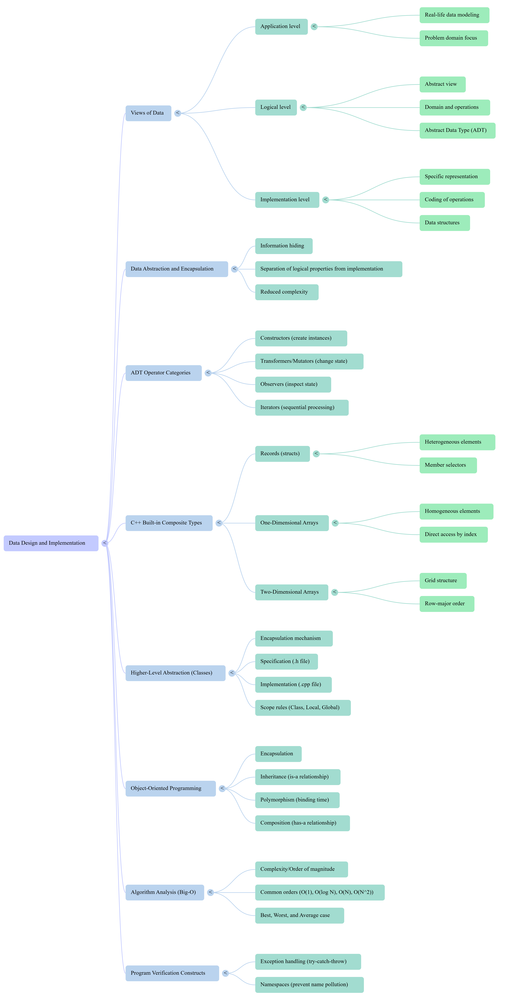

Xinxing Wu
# Data Design and Implementation <hr> <br> Xinxing Wu
# Outline [<p class="hover-underline-animation">Data, Abstraction, ADT</p>](#/ch1) [<p class="hover-underline-animation">Built-in Composite Types + C++</p>](#/ch2) [<p class="hover-underline-animation">Classes, OOP, Exceptions, Namespaces, Big-$\mathcal{O}$</p>](#/ch3) [<p class="hover-underline-animation">Course Podcast</p>](#/ch4) [<p class="hover-underline-animation">Summary</p>](#/ch5)
## Goal <div id="shadebox-neon" class="shadebox neon"> - Design a data type from problem requirements and implement it correctly in C++, by: - Explaining an **ADT** from **3 perspectives** (<spanBYMix>application</spanBYMix>, <spanGREEN>logical</spanGREEN>, <spanRED>implementation</spanRED>) - Describing **data abstraction** and **encapsulation** - Using C++ built-in types (struct, arrays, classes) as **data representations** </div>
## Goal (Cont.) <div id="shadebox-neon" class="shadebox neon"> - Design a data type from problem requirements and implement it correctly in C++, by: - Writing very small **class + member functions** - Understanding **inheritance** and **polymorphism** at a beginner level - Recognizing why we mention **Big-$\mathcal{O}$** when comparing solutions </div> <hr style="border:0;height:6px;border-radius:999px;background:linear-gradient(90deg,#ff3b3b,#ffb13b,#fff23b,#3bff8f,#3bc8ff,#8a3bff,#ff3b3b);background-size:300% 100%;animation:rainbowLine 4s linear infinite;"><style>@keyframes rainbowLine{0%{background-position:0% 50%}100%{background-position:300% 50%}}</style> <div style="font-size: 0.8em; line-height: 1.0"> - Time complexity is a measure of how the runtime of an algorithm grows as the size of its input (usually denoted as n) increases, and the "$\mathcal{O}$" in Big $\mathcal{O}$ notation stands for "order of". <a href="https://kysu.instructure.com/courses/7041/pages/a-guide-to-big-o-analysis" target="_blank">Link</a> </div>
<p class="definition-rainbow-title">Data, Abstraction, ADT</p>
<div class="definition-pro-Y-container"> <div class="definition-pro-Y-title">Warm-up: Programs have “verbs” and “nouns”</div> <div class="definition-pro-Y-shadebox"> <div style="width: 1000px;"></div> - “Verbs” = actions (add, read, write, multiply, print…) - “Nouns” = the **data** (numbers, lists, records, objects…) <br> <hr> <div id="shadebox-glass" class="shadebox glass"> **Goal today:** design the *<spanGREEN>nouns</spanGREEN>* clearly so the <spanRED>verbs</spanRED> become easy. </div> </div> </div> <div class="definition-pro-Y-container"> <div class="definition-pro-Y-title">What is “data”?</div> <div class="definition-pro-Y-shadebox"> Data is the information the program *stores and manipulates*. </div> </div> > # What is “data” in computers? <div class="definition-pro-Y-container"> <div class="definition-pro-Y-title">What is “data”?</div> <div class="definition-pro-Y-shadebox"> - At the computer level: <spanGREEN>bits (0/1)</spanGREEN>. - At the human level: numbers, names, students, cars, dates, books… So we need a way to talk about data in a human-friendly form. </div> </div> <div class="definition-pro-Y-container"> <div class="definition-pro-Y-title">Data Abstraction</div> <div class="definition-pro-Y-shadebox"> **Data abstraction** = separating **what a thing is** from **how it is stored**. <hr style="border:0;height:6px;border-radius:999px;background:linear-gradient(90deg,#ff3b3b,#ffb13b,#fff23b,#3bff8f,#3bc8ff,#8a3bff,#ff3b3b);background-size:300% 100%;animation:rainbowLine 4s linear infinite;"><style>@keyframes rainbowLine{0%{background-position:0% 50%}100%{background-position:300% 50%}}</style> You want to say: - “This is a Date” - without caring (at first) how memory stores it </div> </div> <p class='titlep'> </p> <p class='titlep'> </p> <div id="roundbox"> - Did you use a TV remote/a microwave/a smartphone? </div> <p class='titlep'> </p> <p class='titlep'> </p> <div id="shadebox"> - Did you design/create a TV remote/a microwave/a smartphone? </div> <div class="definition-pro-Y-container"> <div class="definition-pro-Y-title">Real-life analogy</div> <div class="definition-pro-Y-shadebox"> <div style="width: 800px;"></div> Real-life analogy: “<spanBYMix>You use it, you don’t build it</spanBYMix>” <hr style="border: none; border-top: 1.5px solid cyan;"> When you use: - a TV remote - a microwave - a smartphone You know **buttons + results**, not the wiring inside. That’s exactly the idea of abstraction for data types. </div> </div> <div class="definition-pro-Y-container"> <div class="definition-pro-Y-title">Data Encapsulation</div> <div class="definition-pro-Y-shadebox"> Encapsulation = hiding internal representation + forcing access through rules. <hr style="border: none; border-top: 1.5px solid cyan;"> You want: - **safe access** - **controlled changes** - fewer bugs from “random direct edits” In C++: `class` encourages encapsulation. </div> </div> <div class="definition-pro-Y-container"> <div class="definition-pro-Y-title">ADT: Abstract Data Type (the “black box”)</div> <div class="definition-pro-Y-shadebox"> <div style="width: 800px;"></div> An **ADT** is defined by: - **what values exist** (the domain) - **what operations exist** (the allowed actions) <div style="width: 800px;"></div> <hr style="border:0;height:6px;border-radius:999px;background:linear-gradient(90deg,#ff3b3b,#ffb13b,#fff23b,#3bff8f,#3bc8ff,#8a3bff,#ff3b3b);background-size:300% 100%;animation:rainbowLine 4s linear infinite;"><style>@keyframes rainbowLine{0%{background-position:0% 50%}100%{background-position:300% 50%}}</style> Importantly: - ADT definition does **not** depend on one specific implementation. </div> </div> <div class="definition-pro-Y-container"> <div class="definition-pro-Y-title">The “black box” picture</div> <div class="definition-pro-Y-shadebox"> <div style="width: 800px;"></div> The “black box” picture (mental model) <hr style="border: none; border-top: 1.5px solid cyan;"> **Outside (what users see):** - name of type - operations you can call <hr> **Inside (hidden):** - storage details (memory layout) - algorithms used to perform operations </div> </div> <div class="definition-pro-Y-container"> <div class="definition-pro-Y-title">Example</div> <div class="definition-pro-Y-shadebox"> <div style="width: 800px;"></div> Example: `int` as an ADT (yes, really) <div id="shadebox-glass" class="shadebox glass"> You can do: - `+ - * / %` - comparisons: `< > ==` </div> <div id="shadebox-glass" class="shadebox glass"> You do **not** need to know: - binary representation - CPU instructions </div> That’s abstraction. </div> </div> <div class="definition-pro-Y-container"> <div class="definition-pro-Y-title">The 3 Views of Data</div> <div class="definition-pro-Y-shadebox"> <div style="width: 800px;"></div> We design a data structure by switching between 3 views: - **Application (User) View** - “What problem am I <spanRED>solving</spanRED>?” - **Logical (ADT) View** - “What <spanRED>values</spanRED> + <spanRED>operations</spanRED> do I need?” - **Implementation View** - “How do we <spanRED>store</spanRED> it in memory + <spanRED>implement</spanRED> operations?” </div> </div> <p class='titlep'> </p> > **Problem:** store a student and print their info. <div class="definition-pro-Y-container"> <div class="definition-pro-Y-title">Mini example to see the 3 views</div> <div class="definition-pro-Y-shadebox"> <div style="width: 800px;"></div> <div style="width: 800px;"></div> **Problem:** store a student and print their info. <hr style="border:0;height:6px;border-radius:999px;background:linear-gradient(90deg,#ff3b3b,#ffb13b,#fff23b,#3bff8f,#3bc8ff,#8a3bff,#ff3b3b);background-size:300% 100%;animation:rainbowLine 4s linear infinite;"><style>@keyframes rainbowLine{0%{background-position:0% 50%}100%{background-position:300% 50%}}</style> **Application view:** - “I need to store name + id + GPA.” **Logical view (ADT):** - Student has fields (name, id, gpa) - operations: create, update gpa, print **Implementation view:** - Use `struct Student { ... }` in C++ - store `string` and `int` and `double` in memory </div> </div> <div class="definition-pro-Y-container"> <div class="definition-pro-Y-title">ADT vs Data Structure</div> <div class="definition-pro-Y-shadebox"> <div style="width: 800px;"></div> - **ADT** = the *idea/specification* (what it should do) - **Data structure** = the *concrete implementation* (how it’s stored + accessed) <hr style="border:0;height:6px;border-radius:999px;background:linear-gradient(90deg,#ff3b3b,#ffb13b,#fff23b,#3bff8f,#3bc8ff,#8a3bff,#ff3b3b);background-size:300% 100%;animation:rainbowLine 4s linear infinite;"><style>@keyframes rainbowLine{0%{background-position:0% 50%}100%{background-position:300% 50%}}</style> Same ADT can have multiple implementations. </div> </div> <div class="definition-pro-Y-container"> <div class="definition-pro-Y-title">Why we care</div> <div class="definition-pro-Y-shadebox"> <div style="width: 800px;"></div> Later in DS: - Same ADT “List” can be implemented as: - array-based list - linked list - Same ADT “Map” can be: - hash table - balanced tree <hr style="border:0;height:6px;border-radius:999px;background:linear-gradient(90deg,#ff3b3b,#ffb13b,#fff23b,#3bff8f,#3bc8ff,#8a3bff,#ff3b3b);background-size:300% 100%;animation:rainbowLine 4s linear infinite;"><style>@keyframes rainbowLine{0%{background-position:0% 50%}100%{background-position:300% 50%}}</style> Next, we build the habit of thinking in views. </div> </div> <div class="definition-pro-Y-container"> <div class="definition-pro-Y-title">ADT operations categories</div> <div class="definition-pro-Y-shadebox"> <div style="width: 800px;"></div> Operations often fall into categories: - **Constructor**: create a new instance - **Transformer (mutator)**: changes the object - **Observer**: reads info, does not change - **Iterator**: processes items one-by-one (for collections) </div> </div> <div class="definition-pro-Y-container"> <div class="definition-pro-Y-title">Example ADT: Counter</div> <div class="definition-pro-Y-shadebox"> <div style="width: 800px;"></div> Counter values: 0, 1, 2, 3, … Operations: - constructor: start at 0 - transformer: `increment()`, `reset()` - observer: `getValue()` </div> </div> <div class="definition-pro-Y-container"> <div class="definition-pro-Y-title">Tiny example ADT: Counter</div> <div class="definition-pro-Y-shadebox"> ``` // App.js import React, { useState } from 'react'; import { StyleSheet, Text, View, Button } from 'react-native'; export default function App() { // hold the current count const [count, setCount] = useState(0); return ( <View style={styles.container}> <Text style={styles.counter}>{count}</Text> <View style={styles.buttons}> <Button title="Increment" onPress={() => setCount(count + 1)} /> <View style={{ width: 16 }} /> <Button title="Decrement" onPress={() => setCount(count - 1)} /> <View style={{ width: 16 }} /> <Button title="Reset" onPress={() => setCount(0)} /> </View> </View> ); } const styles = StyleSheet.create({ container: { flex: 1, // fill the screen justifyContent: 'center', alignItems: 'center', backgroundColor: '#fff', }, counter: { fontSize: 72, marginBottom: 24, }, buttons: { flexDirection: 'row', // lay buttons out horizontally }, }); ``` </div> </div> <div class="definition-pro-Y-container"> <div class="definition-pro-Y-title">ADT “Specification” idea </div> <div class="definition-pro-Y-shadebox"> ADT “Specification” idea (pre/post conditions) <div id="shadebox-glass" class="shadebox glass"> A spec can say: - operation name + parameters - **precondition**: must be true before call - **postcondition**: guaranteed after call This is how you define behavior clearly. </div> </div> </div> <div class="definition-pro-Y-container"> <div class="definition-pro-Y-title">Questions</div> <div class="definition-pro-Y-shadebox"> <div id="shadebox-glass" class="shadebox glass"> **Q:** If I say “Stack supports push/pop/top”, is that ADT or data structure? **A:** ADT (behavior definition) </div> <hr style="border: none; border-top: 1.5px solid red;"> <div id="shadebox-glass" class="shadebox glass"> **Q:** If I say “Stack is implemented using an array”, what is that? **A:** Data structure (implementation) </div> </div> </div>
<p class="definition-rainbow-title">Built-in Composite Types + C++</p>
<div class="question-container"> <div class="question-title">Composite data type</div> <div class="question-shadebox"> <div style="width: 800px;"></div> Composite type = a type made of **multiple parts**. <hr style="border:0;height:6px;border-radius:999px;background:linear-gradient(90deg,#ff3b3b,#ffb13b,#fff23b,#3bff8f,#3bc8ff,#8a3bff,#ff3b3b);background-size:300% 100%;animation:rainbowLine 4s linear infinite;"><style>@keyframes rainbowLine{0%{background-position:0% 50%}100%{background-position:300% 50%}}</style> Examples in C++: - `struct` / `class` (records) - arrays (1D, 2D) </div> </div> <div class="definition-container"> <div class="definition-title">Records: `struct`</div> <div class="definition-shadebox"> <div style="width: 800px;"></div> A **record** groups different pieces of data into one unit. <hr style="border:0;height:6px;border-radius:999px;background:linear-gradient(90deg,#ff3b3b,#ffb13b,#fff23b,#3bff8f,#3bc8ff,#8a3bff,#ff3b3b);background-size:300% 100%;animation:rainbowLine 4s linear infinite;"><style>@keyframes rainbowLine{0%{background-position:0% 50%}100%{background-position:300% 50%}}</style> Example: a Car has: - year (int) - maker (string) - price (double) </div> </div> <div class="definition-pro-Y-container"> <div class="definition-pro-Y-title">`struct` example</div> <div class="definition-pro-Y-shadebox"> ```cpp #include <iostream> #include <string> using namespace std; struct Car { int year; string maker; double price; }; int main() { Car myCar; myCar.year = 2020; myCar.maker = "Toyota"; myCar.price = 18000.0; cout << myCar.year << " " << myCar.maker << " $" << myCar.price << "\n"; return 0; } ``` </div> </div> <div class="question-container"> <div class="question-title">Accessing fields</div> <div class="question-shadebox"> <div style="width: 800px;"></div> Accessing fields: the dot operator . <hr style="border: none; border-top: 2px dashed green;"> If myCar is a Car: - myCar.year - myCar.maker - myCar.price That’s called a member selector. </div> </div> <div class="question-container"> <div class="question-title">Struct functions</div> <div class="question-shadebox"> <div style="width: 800px;"></div> Struct functions: pass by value vs reference <hr style="border: none; border-top: 2px dashed green;"> - Pass by value (copy) - function gets a copy - changes <spanRED>do NOT</spanRED> affect original - Pass by reference (original) - function can change the original object </div> </div> <div id="shadebox"> ### Example code - discount a car (reference) <hr style="border: none; border-top: 1.5px solid cyan;"> ``` #include <iostream> #include <string> using namespace std; struct Car { int year; string maker; double price; }; void applyDiscount(Car &c, double percent) { c.price = c.price * (1.0 - percent / 100.0); } int main() { Car c{2020, "Toyota", 18000.0}; applyDiscount(c, 10); // 10% off cout << c.maker << " new price: " << c.price << "\n"; return 0; } ``` </div> <div class="question-container"> <div class="question-title">Example: print (const reference)</div> <div class="question-shadebox"> <div style="width: 800px;"></div> Use const Car& when you <spanRED>only</spanRED> READ: - avoids copying - prevents accidental changes <hr style="border: none; border-top: 2px dashed green;"> ``` void printCar(const Car &c) { cout << c.year << " " << c.maker << " $" << c.price << "\n"; } ``` </div> </div> <div class="question-container"> <div class="question-title">Memory + Offsets</div> <div class="question-shadebox"> Implementation view: memory + offsets - A record is stored in memory in a block. Fields are at different “offsets” inside that block. <hr style="border:0;height:6px;border-radius:999px;background:linear-gradient(90deg,#ff3b3b,#ffb13b,#fff23b,#3bff8f,#3bc8ff,#8a3bff,#ff3b3b);background-size:300% 100%;animation:rainbowLine 4s linear infinite;"><style>@keyframes rainbowLine{0%{background-position:0% 50%}100%{background-position:300% 50%}}</style> You don’t need to compute addresses yet—just know: - fields live “inside” the struct in memory - the compiler calculates where each field is </div> </div> <div class="question-container"> <div class="question-title">One-dimensional arrays</div> <div class="question-shadebox"> <div style="width: 800px;"></div> A 1D array is: - finite - <spanRED>fixed</spanRED> size - ordered - elements have <spanRED>same</spanRED> type - direct access by index </div> </div> <div id="shadebox"> ### Example code - 1D array example: average score <hr style="border: none; border-top: 1.5px solid cyan;"> ``` #include <iostream> using namespace std; int main() { int scores[5] = {90, 80, 70, 100, 85}; int sum = 0; for (int i = 0; i < 5; i++) { sum += scores[i]; } double avg = (double)sum / 5; cout << "Average = " << avg << "\n"; return 0; } ``` </div> <div class="question-container"> <div class="question-title">index meaning</div> <div class="question-shadebox"> <div style="width: 800px;"></div> Key array skill: index meaning - scores[0] is the first element - scores[4] is the last (if size is 5) <hr style="border: none; border-top: 2px dashed green;"> Common beginner bug: going out of bounds - Example (WRONG): scores[5] for size 5. </div> </div> <div class="question-container"> <div class="question-title">Direct access</div> <div class="question-shadebox"> <div style="width: 800px;"></div> You can access any element immediately: - scores[3] without reading scores[0]..scores[2] first That’s what “direct access” means. </div> </div> <div id="shadebox"> ### Example code - Arrays in a struct <hr style="border: none; border-top: 1.5px solid cyan;"> ``` #include <iostream> #include <string> using namespace std; struct Student { string name; int grades[3]; }; int main() { Student s; s.name = "Alice"; s.grades[0] = 90; s.grades[1] = 80; s.grades[2] = 100; cout << s.name << " grades: " << s.grades[0] << ", " << s.grades[1] << ", " << s.grades[2] << "\n"; return 0; } ``` </div> <div class="question-container"> <div class="question-title">Two-dimensional arrays</div> <div class="question-shadebox"> <div style="width: 800px;"></div> A 2D array is like a table: - rows and columns Access: - grid[row][col] </div> </div> <div id="shadebox"> ### Example code - 2D array example: 3x3 board <hr style="border: none; border-top: 1.5px solid cyan;"> ``` #include <iostream> using namespace std; int main() { int board[3][3] = { {1, 2, 3}, {4, 5, 6}, {7, 8, 9} }; for (int r = 0; r < 3; r++) { for (int c = 0; c < 3; c++) { cout << board[r][c] << " "; } cout << "\n"; } return 0; } ``` </div> <div class="question-container"> <div class="question-title">common mistakes</div> <div class="question-shadebox"> <div style="width: 800px;"></div> - mixing row/col: - writing board[col][row] by accident - wrong loop bounds: - r <spanRED><</spanRED> rows, c <spanRED><</spanRED> cols - forgetting braces in initialization </div> </div>
<p class="definition-rainbow-title">Classes, OOP, Exceptions, Namespaces, Big-$\mathcal{O}$</p>
<div class="definition-container"> <div class="definition-title">Why classes?</div> <div class="definition-shadebox"> <div style="width: 800px;"></div> A struct mainly groups data. A class can: - group data and - strongly control access (encapsulation) - attach operations as member functions Think: “ADT in C++”. </div> </div> <div class="definition-container"> <div class="definition-title">The simplest class: Counter</div> <div class="definition-shadebox"> <div style="width: 800px;"></div> We will implement the Counter ADT: - value starts at 0 - increment() changes it - getValue() reads it </div> </div> <div id="shadebox"> ### Example code - Counter class <hr style="border: none; border-top: 1.5px solid cyan;"> ``` #include <iostream> using namespace std; class Counter { private: int value; public: Counter() { value = 0; } void increment() { value++; } int getValue() const { return value; } }; int main() { Counter c; c.increment(); c.increment(); cout << c.getValue() << "\n"; // 2 return 0; } ``` </div> <div class="definition-container"> <div class="definition-title">Encapsulation</div> <div class="definition-shadebox"> <div style="width: 800px;"></div> Encapsulation means: - data is <spanRED>private</spanRED> - you change it only through <spanRED>public</spanRED> functions This prevents random code from breaking your rules. </div> </div> <div class="definition-container"> <div class="definition-title">Add a rule</div> <div class="definition-shadebox"> <div style="width: 800px;"></div> Add a rule (invariant): never go below 0 <hr style="border: none; border-top: 2px dashed green;"> Let’s add decrement() with a safety rule. If it would go below 0, we will throw an exception. </div> </div> <div id="shadebox"> ### Counter with exception <hr style="border: none; border-top: 1.5px solid cyan;"> ``` #include <iostream> #include <stdexcept> using namespace std; class Counter { private: int value; public: Counter() { value = 0; } void increment() { value++; } void decrement() { if (value == 0) { throw runtime_error("Counter cannot go below 0"); } value--; } int getValue() const { return value; } }; int main() { Counter c; try { c.decrement(); // will throw } catch (runtime_error &e) { cout << "Error: " << e.what() << "\n"; } return 0; } ``` </div> <div class="definition-container"> <div class="definition-title">Exception handling</div> <div class="definition-shadebox"> <div style="width: 800px;"></div> Pattern: - throw when something is invalid - try { ... } catch(...) { ... } to handle it <hr style="border: none; border-top: 2px dashed green;"> Why it helps: - prevents silent wrong behavior - forces you to handle bad inputs </div> </div> <div class="definition-container"> <div class="definition-title">Namespaces: why they exist</div> <div class="definition-shadebox"> <div style="width: 800px;"></div> - Problem: two libraries might both have a function named GetData - Namespace solves name conflicts: - myNames::GetData() - yourNames::GetData() </div> </div> <div id="shadebox"> ### Example code - namespace <hr style="border: none; border-top: 1.5px solid cyan;"> ``` #include <iostream> using namespace std; namespace myNames { void GetData() { cout << "myNames GetData\n"; } } namespace yourNames { void GetData() { cout << "yourNames GetData\n"; } } int main() { myNames::GetData(); yourNames::GetData(); return 0; } ``` </div> <div id="shadebox"> ### Example code - Using declaration - Instead of writing myNames:: many times: <hr style="border: none; border-top: 1.5px solid cyan;"> ``` using myNames::GetData; GetData(); ``` </div> - Use carefully to avoid confusion. <div class="definition-container"> <div class="definition-title">OOP</div> <div class="definition-shadebox"> - Encapsulation - Inheritance - Polymorphism </div> </div> <div class="definition-container"> <div class="definition-title">Inheritance</div> <div class="definition-shadebox"> <div style="width: 800px;"></div> Inheritance builds a hierarchy: - child class gets data/operations from parent class It represents an is-a relationship. <hr style="border: none; border-top: 2px dashed green;"> Example: - Car is-a Vehicle - Bicycle is-a Vehicle </div> </div> <div class="definition-container"> <div class="definition-title">Containment vs inheritance</div> <div class="definition-shadebox"> <div style="width: 800px;"></div> - is-a → inheritance - Example: Car is-a Vehicle <hr style="border: none; border-top: 2px dashed green;"> - has-a → containment (composition) - Example: Car has-a Engine <div id="shadebox-glass" class="shadebox glass"> If it “contains” the other thing, don’t use inheritance. </div> </div> </div> <div id="shadebox"> ### Example code - inheritance <hr style="border: none; border-top: 1.5px solid cyan;"> ``` #include <iostream> using namespace std; class Vehicle { public: void move() const { cout << "Vehicle moves\n"; } }; class Car : public Vehicle { public: void honk() const { cout << "Car honk!\n"; } }; int main() { Car c; c.move(); // inherited c.honk(); // car-specific return 0; } ``` </div> <div class="definition-container"> <div class="definition-title">Example: Parents’ property inheritance</div> <div class="definition-shadebox"> <div style="width: 800px;"></div> <div style="width: 800px;"></div> Story (real life) - Parents own a house - The house belongs to the family - When the child grows up: - The child automatically has access to the house - The child can use the house - The child may also have their own personal things (car, phone) </div> </div> > Mapping to C++ code <div class="definition-container"> <div class="definition-title">Example: Parents’ property inheritance</div> <div class="definition-shadebox"> <div style="width: 800px;"></div> - Parent class → Parent’s property ``` class Vehicle { public: void move() const { cout << "Vehicle moves\n"; } }; ``` </div> </div> <div class="definition-container"> <div class="definition-title">Example: Parents’ property inheritance</div> <div class="definition-shadebox"> <div style="width: 800px;"></div> - Child class → Child inherits property ``` class Car : public Vehicle { public: void honk() const { cout << "Car honk!\n"; } }; ``` </div> </div> <div class="definition-container"> <div class="definition-title">Example: Parents’ property inheritance</div> <div class="definition-shadebox"> <div style="width: 800px;"></div> - Using the object → Living in the family ``` Car c; c.move(); // inherited c.honk(); // car-specific ``` </div> </div> <div class="definition-container"> <div class="definition-title">Example: Parents’ property inheritance</div> <div class="definition-shadebox"> <div style="width: 800px;"></div> ``` | C++ Concept | Real-Life Meaning | | -------------------- | -------------------------- | | `Vehicle` | Parents | | `Car` | Child | | `move()` | Family property (house) | | `honk()` | Child’s own property (car) | | `public` inheritance | Property is shared legally | | `Car c;` | A specific child | ``` </div> </div> <div class="definition-container"> <div class="definition-title">Polymorphism</div> <div class="definition-shadebox"> <div style="width: 800px;"></div> Polymorphism means: - one interface (base type) - many behaviors (derived types) In C++: usually via virtual functions. </div> </div> <div id="shadebox"> ### Example code - Polymorphism <hr style="border: none; border-top: 1.5px solid cyan;"> ``` #include <iostream> using namespace std; class Vehicle { public: virtual void sound() const { cout << "Vehicle sound\n"; } virtual ~Vehicle() {} // good practice }; class Car : public Vehicle { public: void sound() const override { cout << "Beep beep!\n"; } }; class Bicycle : public Vehicle { public: void sound() const override { cout << "Ring ring!\n"; } }; int main() { Vehicle *v1 = new Car(); Vehicle *v2 = new Bicycle(); v1->sound(); // Beep beep! v2->sound(); // Ring ring! delete v1; delete v2; return 0; } ``` </div> <div class="definition-container"> <div class="definition-title">Why polymorphism matters</div> <div class="definition-shadebox"> <div style="width: 800px;"></div> Later in DS + OOP: - you store many derived objects via base pointers - you call the same function name - correct behavior happens automatically This makes code flexible and reusable. </div> </div> <div class="definition-container"> <div class="definition-title">Big-$\mathcal{O}$</div> <div class="definition-shadebox"> <div style="width: 800px;"></div> Big-$\mathcal{O}$ describes: - How work <spanGREEN>grows</spanGREEN> as <spanBYMix>input size grows</spanBYMix> We ignore tiny details and focus on growth pattern. <hr> Examples: - $\mathcal{O}(1)$ constant - $\mathcal{O}(n)$ linear - $\mathcal{O}(n^2)$ quadratic </div> </div> <a href="https://kysu.instructure.com/courses/7061/pages/a-guide-to-big-o-analysis" target="_blank">A Guide to Big O Analysis</a> <div class="definition-container"> <div class="definition-title">$\mathcal{O}$(1) - constant time</div> <div class="definition-shadebox"> <div style="width: 800px;"></div> Work stays about the same no matter how big the input gets. - Microwave: Setting it to “30 seconds” takes the same number of button presses whether you’re heating 1 bite or a full plate. - Light switch: Flipping a switch is one action whether the room is small or huge. - Look up a contact by speed dial/favorite: One tap to call “Mom,” regardless of how many contacts you have. </div> </div> <div class="definition-container"> <div class="definition-title">$\mathcal{O}$(n) - linear time</div> <div class="definition-shadebox"> <div style="width: 800px;"></div> - Checking a grocery list: You read each item once; twice as many items ≈ twice as long. - Taking attendance: One check per student; more students means proportionally more time. - Scanning a parking lot for your car: More rows/spots usually means more searching time. </div> </div> <div class="definition-container"> <div class="definition-title">$\mathcal{O}$(n$^2$) - quadratic time</div> <div class="definition-shadebox"> <div style="width: 800px;"></div> - Everyone shaking hands: If each person shakes hands with everyone else, total handshakes grows about like $n(n-1)/2$. - Round-robin tournament: Every team plays every other team; games increase quickly as teams increase. Comparing every pair of essays for similarity: If you compare each essay to every other essay, the number of comparisons explodes $n(n-1)/2$. </div> </div> <div class="definition-container"> <div class="definition-title">Two ways to sum $1\ldots N$</div> <div class="definition-shadebox"> <div style="width: 800px;"></div> Algorithm 1 (loop) Do: - sum = sum + count for count = $1\ldots N$ - This does about N additions → $\mathcal{O}(n)$ </div> </div> <div id="shadebox"> ### Example code - Loop sum <hr style="border: none; border-top: 1.5px solid cyan;"> ``` long long sum1(int n) { long long sum = 0; for (int count = 1; count <= n; count++) { sum += count; } return sum; } ``` </div> <div class="definition-container"> <div class="definition-title">Two ways to sum $1\ldots N$</div> <div class="definition-shadebox"> <div style="width: 800px;"></div> Algorithm 2 <hr style="border:0;height:6px;border-radius:999px;background:linear-gradient(90deg,#ff3b3b,#ffb13b,#fff23b,#3bff8f,#3bc8ff,#8a3bff,#ff3b3b);background-size:300% 100%;animation:rainbowLine 4s linear infinite;"><style>@keyframes rainbowLine{0%{background-position:0% 50%}100%{background-position:300% 50%}}</style> Math: - sum = n(n+1)/2 - This uses a few operations → $\mathcal{O}(1)$ </div> </div> <div id="shadebox"> ### Example code - Formula sum <hr style="border: none; border-top: 1.5px solid cyan;"> ``` long long sum2(int n) { return (long long)n * (n + 1) / 2; } ``` </div> - Even if $n$ is huge, the number of steps stays small. <div class="definition-container"> <div class="definition-title">Why Big-$\mathcal{O}$</div> <div class="definition-shadebox"> Why Big-$\mathcal{O}$ shows up in data structures <hr style="border:0;height:6px;border-radius:999px;background:linear-gradient(90deg,#ff3b3b,#ffb13b,#fff23b,#3bff8f,#3bc8ff,#8a3bff,#ff3b3b);background-size:300% 100%;animation:rainbowLine 4s linear infinite;"><style>@keyframes rainbowLine{0%{background-position:0% 50%}100%{background-position:300% 50%}}</style> Different implementations of the same ADT can have very <spanRED>different</spanRED> speeds. Example later: - searching in unsorted array: $\mathcal{O}(n)$ - searching in balanced tree: $\mathcal{O}(log n)$ </div> </div>
<p class="definition-rainbow-title">Course Podcast</p>
<section> <iframe src="./Discussion2.html" style="width:100%;max-width:1200px;height:620px;border:0;border-radius:14px;overflow:hidden;display:block;margin:30px auto;" allow="autoplay" sandbox="allow-scripts allow-same-origin"> </iframe> </section>
<p class="definition-rainbow-title">Summary</p>
<iframe style="width:100%;max-width:1200px;height:700px;border:0;border-radius:16px;overflow:hidden;display:block;margin:0 auto;box-shadow:0 18px 50px rgba(0,0,0,.35);background:rgba(0,0,0,.06);" src="./files/2_Data Design and Implementation.pdf#page=1&zoom=page-width" allow="fullscreen" loading="lazy"> </iframe> <iframe style="width:100%;max-width:1200px;height:700px;border:0;border-radius:12px;overflow:hidden;display:block;margin:0 auto;" srcdoc='<!doctype html> <html> <head> <meta charset="utf-8" /> <meta name="viewport" content="width=device-width,initial-scale=1" /> <style> body{margin:0;padding:14px;font-family:Arial,Helvetica,sans-serif;background:#32a881;} .wrap{width:100%;max-width:1200px;margin:0 auto;} .bar{display:flex;gap:10px;align-items:center;margin-bottom:10px;} button{padding:8px 12px;border:1px solid #ccc;border-radius:8px;background:#fff;cursor:pointer;} .label{margin-left:auto;font-size:14px;color:#333;} .box{width:100%;height:650px;border:1px solid rgba(0,0,0,.18);border-radius:12px;overflow:auto;background:#fafafa;box-shadow:0 10px 25px rgba(0,0,0,.10);} img{display:block;width:auto;height:700px;max-width:none;max-height:none;transform-origin:top left;transform:scale(1);} </style> </head> <body> <div class="wrap" id="root"> <div class="bar"> <button id="zin" type="button">Zoom +</button> <button id="zout" type="button">Zoom -</button> <button id="zreset" type="button">Reset (100%)</button> <span class="label" id="zl">100%</span> </div> <div class="box" id="box"> <p></p> </div> </div> <script> (function(){ var zoom=1, step=0.2, min=0.2, max=6; var img=document.getElementById("img"); var label=document.getElementById("zl"); var box=document.getElementById("box"); function apply(){ img.style.transform="scale("+zoom+")"; label.textContent=Math.round(zoom*100)+"%"; } document.getElementById("zin").addEventListener("click", function(){ zoom=Math.min(max, zoom+step); apply(); }); document.getElementById("zout").addEventListener("click", function(){ zoom=Math.max(min, zoom-step); apply(); }); document.getElementById("zreset").addEventListener("click", function(){ zoom=1; apply(); }); box.addEventListener("wheel", function(e){ if(!e.ctrlKey) return; e.preventDefault(); zoom += (e.deltaY < 0) ? step : -step; zoom = Math.max(min, Math.min(max, zoom)); apply(); }, {passive:false}); apply(); })(); </script> </body> </html>'> </iframe> ## Review <video controls> <source src="./files/The_Hidden_Layers_of_Code.mp4" type="video/mp4"> </video> <div class="definition-com-container"> <div class="definition-com-title">Exercise</div> <div class="definition-com-shadebox"> 1.Data = “nouns”; operations = “verbs” <button type="button" class="reveal-btn" data-answer="answer-q1">Show Answer</button> <div id="answer-q1" class="answer-box"> <b>Answer:</b>Data (nouns): the things you store (Student, Car, Date, scores, name). Operations (verbs): what you do to data (create, update, print, compute average). </div> <hr style="border: none; border-top: 2px dashed orange;"> 2.Abstraction vs encapsulation <button type="button" class="reveal-btn" data-answer="answer-q2">Show Answer</button> <div id="answer-q2" class="answer-box"> <b>Answer:</b>Abstraction: focus on what it does, not how it’s stored. Encapsulation: hide the internal data and allow access only through safe methods (usually private data + public functions). </div> <hr style="border: none; border-top: 2px dashed orange;"> 3.ADT vs data structure <button type="button" class="reveal-btn" data-answer="answer-q3">Show Answer</button> <div id="answer-q3" class="answer-box"> <b>Answer:</b>ADT (Abstract Data Type): the specification (values + allowed operations), independent of storage. Data structure: the implementation (arrays, structs, classes, linked lists, etc.) used to realize the ADT. </div> </div> </div> <div class="definition-com-container"> <div class="definition-com-title">Exercise (Cont.)</div> <div class="definition-com-shadebox"> 4.views: application / logical / implementation <button type="button" class="reveal-btn" data-answer="answer-q4">Show Answer</button> <div id="answer-q4" class="answer-box"> <b>Answer:</b>Application view: what the problem needs (requirements). Logical view (ADT): what values + operations exist. Implementation view: how it’s stored and coded in C++ (arrays, structs, classes, algorithms). </div> <hr style="border: none; border-top: 2px dashed orange;"> 5.struct + arrays + class basics <button type="button" class="reveal-btn" data-answer="answer-q5">Show Answer</button> <div id="answer-q5" class="answer-box"> <b>Answer:</b>struct: groups related fields; members are public by default. arrays: fixed-size collection of same type; access by index (a[i]). class: like struct but supports stronger design; members are private by default; used to enforce rules (encapsulation). </div> <hr style="border: none; border-top: 2px dashed orange;"> 6.inheritance vs has-a <button type="button" class="reveal-btn" data-answer="answer-q6">Show Answer</button> <div id="answer-q6" class="answer-box"> <b>Answer:</b>Inheritance (is-a): Car is-a Vehicle → class Car : public Vehicle. Has-a (composition): Car has-a Engine → class Car { Engine e; }. </div> </div> </div> <div class="definition-com-container"> <div class="definition-com-title">Exercise (Cont.)</div> <div class="definition-com-shadebox"> 7.polymorphism with virtual <button type="button" class="reveal-btn" data-answer="answer-q7">Show Answer</button> <div id="answer-q7" class="answer-box"> <b>Answer:</b>Base class has virtual function. Derived classes override it. Calling through a base pointer/reference runs the derived behavior. </div> <hr style="border: none; border-top: 2px dashed orange;"> 8.Big-$\mathcal{O}$ meaning ($\mathcal{O}(n)$ vs $\mathcal{O}(1)$) <button type="button" class="reveal-btn" data-answer="answer-q8">Show Answer</button> <div id="answer-q8" class="answer-box"> <b>Answer:</b>$\mathcal{O}(1)$: constant time, doesn’t grow with input size (e.g., formula sum). $\mathcal{O}(n)$: grows linearly with input size (e.g., loop over n items). </div> </div> </div> <div class="definition-com-container"> <div class="definition-com-title">Exercise (Cont.)</div> <div class="definition-com-shadebox"> Task A: Design an ADT Pick one: Counter, Student, Car, Date Write: - values (what it stores) - operations (create / change / read) <button type="button" class="reveal-btn" data-answer="answer-q9">Show Answer</button> <div id="answer-q9" class="answer-box"> <b>Answer:</b>Values (what it stores): name (string); scores[3] (three integer test scores). Operations (create / change / read): Create: Student(name) initializes scores to 0; Change: setScore(i, value) updates one score; Read: getName(), getScore(i), average() returns average score </div> </div> </div> <div class="definition-com-container"> <div class="definition-com-title">Exercise (Cont.)</div> <div class="definition-com-shadebox"> Make a Student struct: - name - 3 test scores (array) - function that computes average </div> </div> <div id="shadebox"> ### An Answer <hr style="border: none; border-top: 1.5px solid cyan;"> ``` #include <iostream> #include <string> using namespace std; struct Student { string name; int scores[3]; }; double average(const Student &s) { int sum = 0; for (int i = 0; i < 3; i++) sum += s.scores[i]; return sum / 3.0; } int main() { Student s; s.name = "Bob"; s.scores[0] = 70; s.scores[1] = 80; s.scores[2] = 90; cout << s.name << " average = " << average(s) << "\n"; return 0; } ``` </div> <div class="definition-com-container"> <div class="definition-com-title">Exercise (Cont.)</div> <div class="definition-com-shadebox"> Upgrade to a Student class: - scores private - method setScore(i, value) checks bounds - method average() </div> </div> <div id="shadebox"> ### An Answer <hr style="border: none; border-top: 1.5px solid cyan;"> ``` #include <iostream> #include <string> #include <stdexcept> using namespace std; class Student { private: string name; int scores[3]; public: Student(string n) { name = n; for (int i = 0; i < 3; i++) scores[i] = 0; } void setScore(int i, int value) { if (i < 0 || i >= 3) throw out_of_range("Index must be 0..2"); if (value < 0 || value > 100) throw invalid_argument("Score must be 0..100"); scores[i] = value; } double average() const { int sum = 0; for (int i = 0; i < 3; i++) sum += scores[i]; return sum / 3.0; } string getName() const { return name; } }; int main() { try { Student s("Bob"); s.setScore(0, 70); s.setScore(1, 80); s.setScore(2, 90); cout << s.getName() << " average = " << s.average() << "\n"; } catch (exception &e) { cout << "Error: " << e.what() << "\n"; } return 0; } ``` </div>